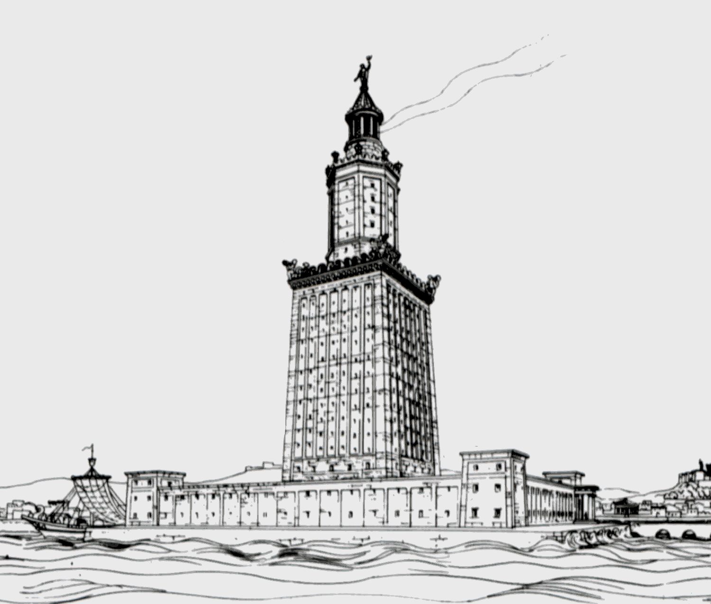

Svetilnik v Aleksandriji, imenovan tudi Faros, je bil zgrajen v času Ptolemejske Egipčanske države med vladavino Ptolemaja II. Filadelfa (280–247 pr. n. št.). Dosegal je vsaj 100 metrov višine in je bil eden izmed Sedmih čudes antičnega sveta.
Po treh potresih med letoma 956 in 1303 je bil močno poškodovan in na koncu zapuščena. Njegovi ostanki so bili v 15. stoletju uporabljeni za gradnjo Citadele Qaitbay na istem mestu.
V letu 1994 so arheologi so pod vodo odkrili del svetilnika, leta 2016 pa so egiptovski načrtovalci želeli narediti podvodni muzej. Leta 2025 so nekatere kamnite dele svetilnika obnovili za digitalno rekonstrukcijo.
Pharos je bil majhen otok na zahodnem robu Nila. Leta 332 pr. n. št. je Aleksander Veliki ustanovil Aleksandrijo nasproti Pharosa. Otok sta pozneje povezala z molem Heptastadion. Danes je od otoka ostal le rta Ras el-Tin, kjer je v 19. stoletju stal palača, medtem ko je svetilnik izginil zaradi erozije.
Svetilnik so zgradili v 3. stoletju pr. n. št. Gradnja je trajala 12 let. Bil je iz apnenca in granita, svetlobo je dajal vrh s pečjo, kamen pa so pridobili iz kamnolomov Wadi Hammamat.
Svetilnik je bil poškodovan v potresih leta 796, 951 in 956, popolnoma pa se je porušil tudi leta 1303. Ostanki so izginili leta 1480, ko je sultan Qaitbay na mestu zgradil trdnjavo.
Arabec al-Mas'udi pripoveduje legendo, da so Bizantinci v času kalifa Abd al-Malika evnuka, ki je sprejel islam, uporabili za podkop temeljev svetilnika, ki se je tako zrušil, evnuk pa je pobegnil s čolnom.
